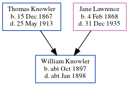

William John Knowler cOct 1897 - c1898
[ Home ] | [ Calendar ] | [ Surnames Index ] | [ Errors ] | [ Family History ]The child of Thomas Knowler (an agricultural labourer) and Jane Lawrence, William Knowler, the first cousin twice-removed on the mother's side of Nigel Horne, was born in Eastry, Kent, England c. Oct 18971,2,3 and baptised in Staple, Kent, England on 31 Oct 1897.
He died c. Jan 1898 in Staple3,4 and was buried there on 21 Jan 18985.
Parents
- Thomas William was born on 15 Dec 1867
- Jane was born on 4 Feb 1868
Citations
- England & Wales births 1837-2006 - Findmypast
- England & Wales, FreeBMD Birth Index, 1837-1915 Online publication - Provo, UT, USA: The Generations Network, Inc., 2006.Original data - General Register Office. England and Wales Civil Registration Indexes. London, England: General Register Office. © Crown copyright. Published by permission of the Cont
- England & Wales, FreeBMD Death Index: 1837-1915 Online publication - Provo, UT, USA: The Generations Network, Inc., 2006.Original data - General Register Office. England and Wales Civil Registration Indexes. London, England: General Register Office. © Crown copyright. Published by permission of the Cont
- England & Wales deaths 1837-2007 - Findmypast
- England Deaths & Burials 1538-1991 - Findmypast
Media
England & Wales births 1837-2006 - BMD/B/1897/4/AZ/000338/049
England & Wales deaths 1837-2007 - BMD/D/1898/1/AZ/000234/215
England Births & Baptisms 1538-1975 - R_884697335
England Deaths & Burials 1538-1991 - R_276621311
Family Tree
Map
Generated by ged2site. Last updated on Jul 3, 2024